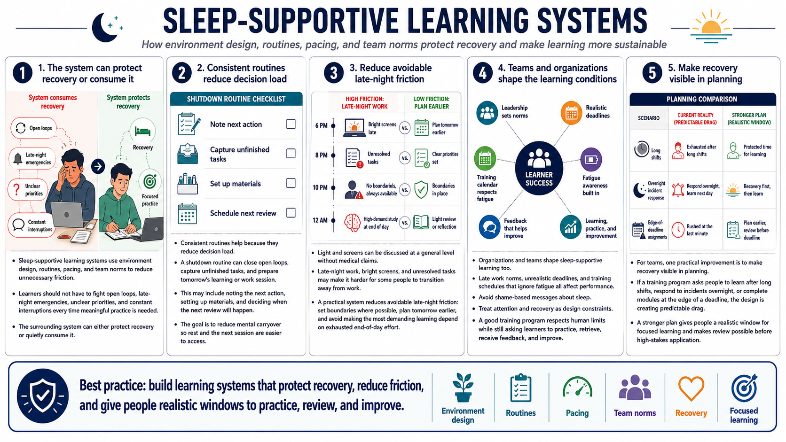

Building Sleep-Supportive Learning Systems
Connecting to LMS... Progress: in progress

Narration
Sleep-supportive learning systems use environment design, routines, pacing, and team norms to reduce unnecessary friction. A learner should not have to fight open loops, late-night emergencies, unclear priorities, and constant interruptions every time meaningful practice is needed. The surrounding system can either protect recovery or quietly consume it.
Consistent routines help because they reduce decision load. A shutdown routine can close open loops, capture unfinished tasks, and prepare tomorrow's learning or work session. That might include noting the next action, setting up materials, and deciding when the next review will happen. The point is to reduce mental carryover so rest and the next session are easier to access.
Light and screens can be discussed at a general level without medical claims. Late-night work, bright screens, and unresolved tasks may make it harder for some people to transition away from work. A practical system reduces avoidable late-night friction: set boundaries where possible, plan tomorrow earlier, and avoid making the most demanding learning depend on exhausted end-of-day effort.
Organizations and teams shape sleep-supportive learning too. Late work norms, unrealistic deadlines, and training schedules that ignore fatigue all affect performance. Avoid shame-based messages about sleep. Instead, treat attention and recovery as design constraints. A good training program respects human limits while still asking learners to practice, retrieve, receive feedback, and improve.
For teams, one practical improvement is to make recovery visible in planning. If a training program asks people to learn after long shifts, respond to incidents overnight, or complete modules at the edge of a deadline, the design is creating predictable drag. A stronger plan gives people a realistic window for focused learning and makes review possible before high-stakes application.